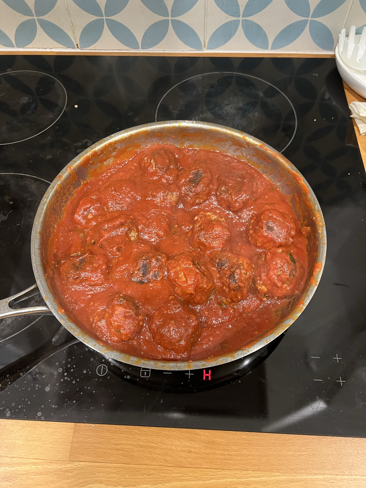
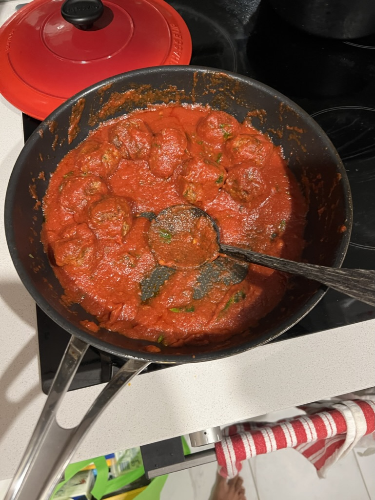

Turkey Meatballs


Description
Tender meatballs filled with onions and Parmesan, bathed in plenty of tomato sauce, are classics in every way except for one: They call for turkey instead of the usual beef (or beef-veal-pork combination). Serve them over spaghetti or polenta, or stuff them into a hero roll for a sandwich. Try to use ground dark meat turkey here if you can, it has a deeper, richer flavor than ground white meat.
Ingredients
- ½ cup grated Parmesan cheese, more for serving, if desired
- ½ cup panko or other plain dried bread crumbs
- ¼ cup minced onion
- ¼ cup chopped chives or basil
- 2 garlic cloves, grated on a microplane or minced
- 1½ teaspoons kosher salt
- ½ teaspoon black pepper
- ½ teaspoon dried oregano
- Pinch red pepper flakes (optional)
- 1½ pounds ground turkey, very cold
- 1 large egg, beaten
- 3 tablespoons extra-virgin olive oil, more as needed
- 3 cups marinara sauce, more to taste
Steps
- In a large bowl, combine cheese, bread crumbs, onion, chives, garlic, salt, pepper, oregano and red pepper flakes (optional) and mix well.Add turkey and egg and blend with your hands until well mixed. Chill for at least an hour or up to 24 hours. Form into 28 meatballs, each about 1¼-inches in diameter.
- Heat 2 tablespoons oil in a pan. Brown meatballs in batches on all sides, adding more oil as needed. Transfer to a plate.
- Add marinara sauce to the pan and simmer, scraping up browned bits. Return meatballs and simmer until cooked through, about 15-20 minutes.
- Serve hot, drizzled with more olive oil and sprinkled with more cheese (optional).